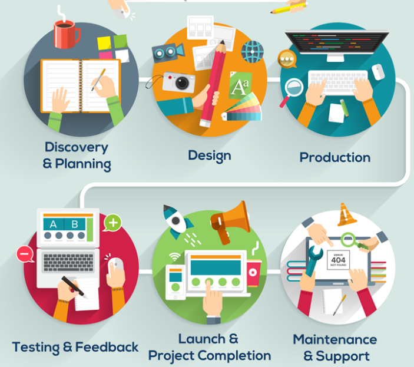

why this project is built ?
Our aim in this prospective project was to identify those patients who were found to have a colorectal cancer before a delay we considered unacceptable; this was taken as 6 months or more from initial presentation to a physician to diagnosis. It was then possible to determine the presenting complaints (always multiple) and the reasons for delay, in the hope that recommendations could be made regarding appropriate, rapid and thorough investigation of patients suspected of having a colorectal cancer. Of the total of 141 patients with colorectal cancer (108 elective, 33 emergency cases) under the care of one consultant during the period studied, 17 patients (12%) (10 men and 7 women), satisfied the criteria for late diagnosis. The mean age was 72.4 years (range 43-86 years). Five common presenting complaints were identified. They were, symptomatic iron deficiency anaemia, rectal bleeding, change in bowel habit, abdominal pain and weight loss. Incomplete imaging of the colon in patients with sinister presenting symptoms was the most commonly identified factor in delay of diagnosis. Inappropriate iron therapy and false-negative reporting of double contrast barium enema investigations were both seen in a number of cases. Other causes were, inappropriate surgical treatment and both clerical error and delay. The mean time for delay was 17.6 months (median 15 months). Late diagnosed cancers were most commonly found in the caecum and least commonly in the rectum. Colonic tumours of each Dukes' stage were identified, Dukes' B most common and Dukes' A least. so the main goal is to identify or (detect) crc early thorough alignment of two sequences the SNPs of mutation of TP53 protein and the sequence of the patient to test if it contains these biomarkers which could cause CRC in the future.
What is the workflow of this website ?
first of all the Admin will register some doctor accounts for the organization in the database (official users) and otherside the normal person then contacts with the organization responsible of helping doctors detect crc early to make sure he is registered officially too lastly he open the website URL, register an account and verify it by entering the [code] (which is generated automatically for every doctor for authentication & security purposes only) and his [National ID] too finally if credentials matched, the user comes in the system to upload his sequence file and wait for the doctor to login, run the detect page according to this patient to see the risk ratio of his sequence, and type a result/report/comment and they can chat too.
How this project is built ?
Development Process
Both PHP and MySQL have proven to be effective and comprehensive web development tools for businesses to create outstanding web applications. With PHP MySQL development process, businesses have been able to develop database-driven web applications in a much faster and easier manner.
Project Analysis:
This is an important stage of the Web Development process. This involves the process of requirements gathering and setting the goal of the project. All the factors like project cost, project feasibility and web development requirements are taken into consideration during this stage of development. The project requirement analysis is also carried out at this stage, which often involves a great deal of consultation with the client.

Design:
The process of website design has a big influence on the later stages of the project. Hence this needs to be carried out with utmost care. This process involves documentation of the design of the project like the interface and functional features that are required. Once the design is ready, it’s time to build the application. Several steps will happen during this phase:- Create a database. The Developer determines what data and data types are needed for the application to function well and will create a database for storage.
- Frontend development. The Developer creates the frontend of the application, based on elements that users approved during the wireframing process.
- Backend development. The Developer creates interaction between the user and the server.
Development:
The process of development involves the development of the website layout or interface. This is usually done by the website designers who make use of tools like Photoshop and HTML editors. The functionality of the website is also developed during this stage. This involves using scripting languages like HTML, HTML5, CSS, CSS3, JavaScript, Ajax, jQuery, Bootstrap and many other technologies as well.Implementation:
This is stage involves shifting the website from the development environment to the production environment and set up the project for testing. This involves using programming languages like PHP and database managment system like MySQL with tools like git, github, sublime text editor, PhpStorm and XAMPP.
Testing:
Although the project is thoroughly tested during every stage of development, it is important to setup proper test cases at the end of the project development stage. This is important to make sure all the requirements are met and that there are no bugs. All the bugs and issues found during this testing process are addressed by the development team and the testing team is requested to test the project once again.
Maintenance:
The web development process does not end after acceptance and deployment. The website development team is also responsible for the maintenance of the website which may involve minor tweaks, updating or upgrading as per agreement with the client.